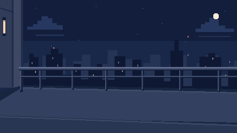
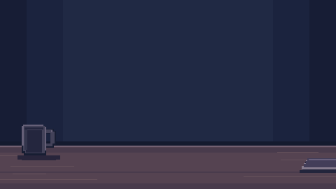

Qrush


Year 2042 - QUANTUM LABORATORY
As you go for a walk, you see that Alice is on the balcony, your coworker and crush.
You build up the courage to approach her...
But you have a strange feeling that Zeno won't let this happen so easily.
QUANTUM LABORATORY
Alice
Replies paused while you work.
Encrypted packet sent.
Zeno copied the packet on its way out.
THE END
Qrush
Just the two of you.